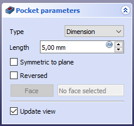

PartDesign Pocket/ro
This documentation is not finished. Please help and contribute documentation.
GuiCommand model explains how commands should be documented. Browse Category:UnfinishedDocu to see more incomplete pages like this one. See Category:Command Reference for all commands.
See WikiPages to learn about editing the wiki pages, and go to Help FreeCAD to learn about other ways in which you can contribute.
|
|
| Menu location |
|---|
| PartDesign → Pocket |
| Workbenches |
| PartDesign, Complete |
| Default shortcut |
| None |
| Introduced in version |
| - |
| See also |
| None |
Description
Descriere
Instrumentul Pocket așchiază un solid prin extrudarea unei schițe în traiectorie dreaptă și extrăgând-o din solid.

Sketch profile (A) was mapped to the top face of base solid (B); result after pocketing through on the right.
Usage
Cum se foloseșste
{kind=link}
Opțiuni
{kind=link}

When creating a pocket, or after double-clicking an existing pocket in the Tree View, the Pocket parameters task panel is shown. It offers the following settings:

Start
Sets where the pocket begins. By default the pocket starts at the sketch or face used as its profile. introduced in 26.3
- Profile (default): the pocket starts directly at the profile's sketch plane or face.
- Offset: the pocket starts at a numeric distance from the profile, entered in the Start Offset field.
- Reference: the pocket starts at a face, datum plane, or sketch selected with the Select reference button.
This is useful to create multiple features from a single master sketch without needing separate offset planes for each one.
Type
Type offers five different ways of specifying the length of the pocket:
Dimension
Atunci când se creează un pocket, dialogul Pocket parameters oferă cinci căi diferite de specificare a lungimii(adâncimii) la care buzunarul va fi extrudat:
Dimension
Enter a numeric value for the depth of the pocket. The default direction for extrusion is into the support. Extrusions occur normal to the defining sketch plane. Negative dimensions are not possible. Use the Reversed option instead.
To first
The pocket will extrude up to the first face of the support in the extrusion direction. In other words, it will cut through all material until it reaches an empty space.
Through all
The pocket will cut through all material in the extrusion direction. With the option Symmetric to plane the pad will cut through all material in both directions.
Up to face
The pocket will extrude up to a face in the support that can be chosen by clicking on it.
Two dimensions
v0.17 and above This allows to enter a second length in which the pad should extend in the opposite direction (into the support). Again can be changed by ticking the Reversed option.
Through all
The pocket will extend up to the last face of the support it encounters in its direction. With the option Symmetric to plane the pocket will cut through all material in both directions. Note that for technical reasons, Through All is actually a 10 meter deep pocket. If you need deeper pockets, use the type Dimension.
To first
The pocket will extend up to the first face of the support it encounters in its direction.
Up to face
The pocket will extend up to a face. Press the Select face button and select a face or a datum plane from the Body.
Two dimensions
This allows to enter a second length in which the pocket should extend in the opposite direction. The directions can be switched by checking the Reversed option.
Up to shape
introduced in 1.0: The pocket will extend up to the selected shape. Optionally press the Select shape button and select a shape. Leave the Select all faces checkbox enabled or disable it, press the Select button and select the faces up to which the pocket should be created.
Offset to face
Offset from face at which the pocket will end. This option is only available if Type is Through all, To first or Up to face.
Length
Defines the length of the pocket. This option is only available if Type is Dimension or Two dimensions. The length is measured along the direction vector, or along the normal of the sketch or face. Negative values are not possible. Use the Reversed option instead.
2nd length
Defines the length of the pocket in the opposite direction. This option is only available if Type is Two dimensions.
Symmetric to plane
Check this option to extrude half the given length to either side of the sketch or face, if Type is Dimension, or Through all if that is the Type.
Reversed
Reverses the direction of the pocket.
Direction
Direction/edge
You can select the direction of the extrusion:
- Sketch normal or Face normal: The sketch or face is extruded in the opposite direction of its normal. If you have selected several sketches or faces to be extruded, the normal of the first one will be used.
- Select reference…: The sketch or face is extruded in the opposite direction of a straight edge or a datum line selected from the Body.
- Custom direction: The sketch or face is extruded in the direction of the specified vector.
Show direction
If checked, the pocket direction will be shown. In case the pocket uses a Custom direction, it can be changed.
Length along sketch normal
If checked, the pocket length is measured along the sketch or face normal, otherwise along the custom direction.
Taper angle
Tapers the pocket in the extrusion direction by the given angle. A positive angle means the outer pocket border gets wider. Note that inner structures receive the opposite taper angle. This is done to facilitate the design of molds and molded parts. This option is only available if Type is Dimension or Two dimensions.
2nd taper angle
Tapers the pocket in the opposite extrusion direction by the given angle. See Taper angle. This option is only available if Type is Two dimensions.
Properties
Data
Part Design
- DateRefine (
Bool): True or false. Cleans up residual edges left after the operation. This property is initially set according to the user's settings (found in Preferences → Part Design → General → Model settings).
- DateType (
Enumeration): Defines how the pocket will be extruded, see Options. - DateLength (
Length): Defines the length of the pocket, see Options. - DateLength2 (
Length): Second pocket length in case the DateType is TwoLengths, see Options. - DateUse Custom Vector (
Bool): If checked, the pocket direction will not be the normal vector of the sketch but the given vector, see Options. - DateDirection (
Vector): Vector of the pocket direction if DateUse Custom Vector is used. - DateReference Axis (
LinkSub) - DateAlong Sketch Normal (
Bool): If true, the pocket length is measured along the sketch normal. Otherwise and if DateUse Custom Vector is used, it is measured along the custom direction. - DateUp To Face (
LinkSub): A face the pocket will extrude up to, see Options. - DateOffset (
Length) - DateTaper Angle (
Angle) - DateTaper Angle2 (
Angle) - DateStart Type (
Enumeration): sets how the pocket start is defined (Profile plane, Offset, Reference), see Options. introduced in 26.3 - DateStart Offset (
Length): distance between the profile and the start of the pocket. Only used if DateStart Type is Offset. introduced in 26.3 - DateStart Reference (
LinkSub): a face, plane, or sketch the pocket starts from. Only used if DateStart Type is Reference. introduced in 26.3
Sketch Based
- DateProfile (
LinkSub) - DateMidplane (
Bool) - DateReversed (
Bool) - DateAllow Multi Face (
Bool)
Limitations
Limitări
- Use the type Dimension or Through All wherever possible because the other types sometimes give trouble when they are being patterned
- Otherwise, the pocket feature has the same limitations as the pad feature.
- Helper tools: New Body, New Sketch, Attach Sketch, Edit Sketch, Validate Sketch, Check Geometry, Sub-Shape Binder, Clone
- Modeling tools:
- Additive tools: Pad, Revolution, Additive Loft, Additive Pipe, Additive Helix, Additive Box, Additive Cylinder, Additive Sphere, Additive Cone, Additive Ellipsoid, Additive Torus, Additive Prism, Additive Wedge
- Subtractive tools: Pocket, Hole, Groove, Subtractive Loft, Subtractive Pipe, Subtractive Helix, Subtractive Box, Subtractive Cylinder, Subtractive Sphere, Subtractive Cone, Subtractive Ellipsoid, Subtractive Torus, Subtractive Prism, Subtractive Wedge
- Boolean: Boolean Operation
- Dress-up tools: Fillet, Chamfer, Draft, Thickness
- Transformation tools: Mirror, Linear Pattern, Polar Pattern, Multi-Transform, Scale
- Additional tools: Shape Binder, Involute Gear, Sprocket, Shaft Design Wizard
- Context menu: Suppressed, Set Tip, Move Object To…, Move Feature After…
- Preferences: Preferences, Fine tuning
- Getting started
- Installation: Download, Windows, Linux, Mac, Additional components, Docker, AppImage, Ubuntu Snap
- Basics: About FreeCAD, Interface, Mouse navigation, Selection methods, Object name, Preferences, Workbenches, Document structure, Properties, Help FreeCAD, Donate
- Help: Tutorials, Video tutorials
- Workbenches: Std Base, Assembly, BIM, CAM, Draft, FEM, Inspection, Material, Mesh, OpenSCAD, Part, PartDesign, Points, Reverse Engineering, Robot, Sketcher, Spreadsheet, Surface, TechDraw, Test Framework
- Hubs: User hub, Power users hub, Developer hub